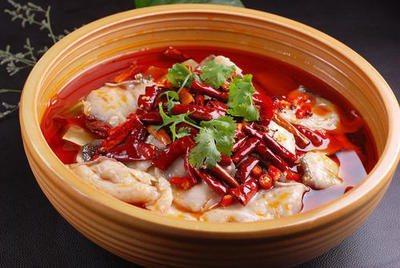
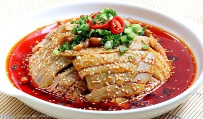
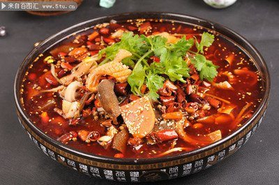

川菜
发展历史
川菜起源于古代巴蜀地区，已有两千多年历史。秦汉时期初具雏形，唐宋时期进一步发展， 明清时期辣椒传入中国后逐渐形成现代川菜的麻辣特色。20世纪后期，川菜走向全国乃至世界， 成为最受欢迎的中国菜系之一。2010年，成都被联合国教科文组织授予"美食之都"称号。
特色
川菜以麻辣鲜香为核心，讲究"一菜一格，百菜百味"。 调味多变，擅长使用辣椒、花椒、豆瓣酱等调料，形成麻、辣、酸、甜、苦、香、咸七味俱全的特点。 烹调方法多样，以小炒、干烧、干煸、烩等见长。代表菜品如麻婆豆腐、宫保鸡丁、回锅肉等， 体现了川菜"味浓味厚"的独特风格。

你知道吗？
川菜并非只有麻辣味，传统川菜中麻辣菜品仅占30%，更有大量不辣的美食， 如开水白菜、鸡豆花、锅巴肉片等，展现了川菜味型的多样性。
经典菜品






